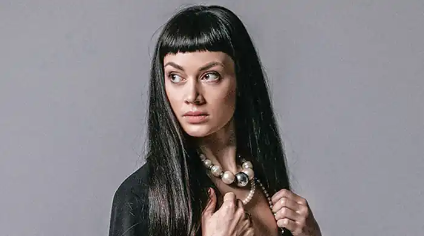
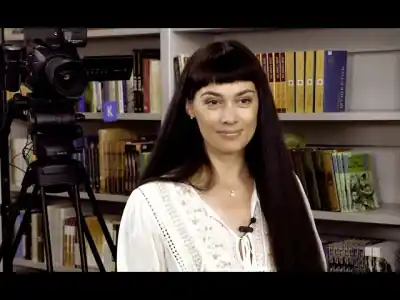
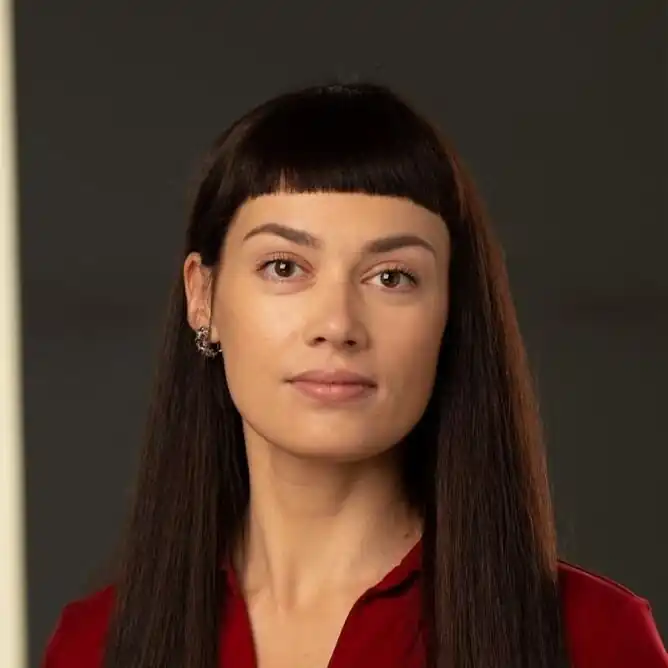

Світлана Тараторіна – українська письменниця та PR-менеджерка. Виросла у Криму. Працювала журналісткою, а також у сфері політичного PR.
Авторка урбан-фентезі "Лазарус", художньої біографії для дітей про Марію Примаченко "Оця Марія звірів малювала", коміксу про підлітків з прифронтових територій "Звуки миру" та низки оповідань, зокрема у збірках "Хроніки незвіданих земель" та "Легендарій дивних міст".
У 2023 році у видавництві Vivat вийшов друком другий роман авторки – постапокаліптична фантастика, написана на основі історії міфів та легенд Криму "Дім солі". Роман "Лазарус" та низка оповідань авторки перекладені польською мовою. Світлана Тараторіна є лауреаткою конкурсів фантастичних оповідань — від літературного об'єднання "Зоряна фортеця", журналу "Стос", володаркою спеціальної відзнаки фестивалю фантастичних оповідань "Брама". Отримала нагороду Chrysalis Award 2019 від Європейського товариства наукової фантастики та увійшла до рейтингу 25 найбільш згадуваних у 2018 році письменників України за версією журналу "Фокус". Роман "Лазарус" здобув премію "ЛітАкцент року 2018", спеціальну відзнаку Українського інституту книги, увійшов до довгих списків Літературної премії "Книга року BBC — 2019", до списку 10 найважливіших книг 2018 року за версією журналу The Village та до переліку найкращих українських книжок 2019 року від Українського ПЕН, був названий книгою року за версією фензіну "Світ Фентезі". Книга "Оця Марія звірів малювала" увійшла до довгого списку книжкової премії "Еспресо. Вибір читачів 2020", до коротких списків "Топ БараБуки 2020" і Всеукраїнського рейтингу "Книжка року 2020". Комікс "Звуки миру" увійшов до списку рекомендованого читання для підлітків від літературного порталу "Читомо" та до переліку найкращих українських книжок 2021 від Українського ПЕН.